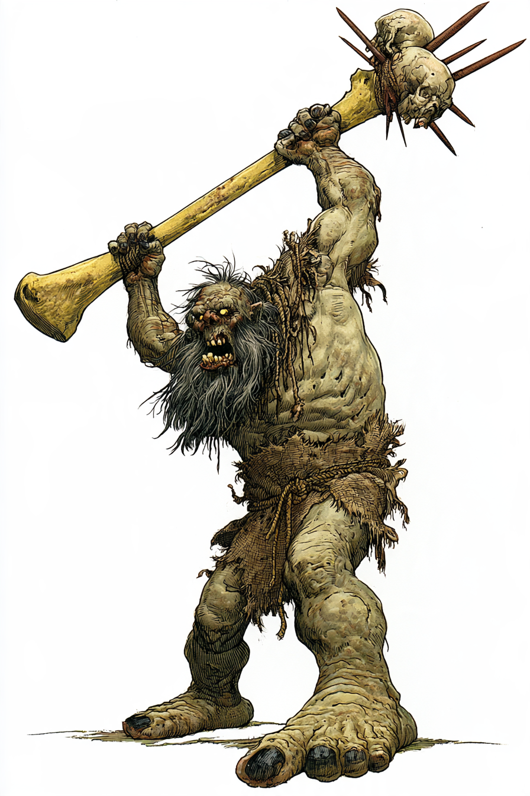
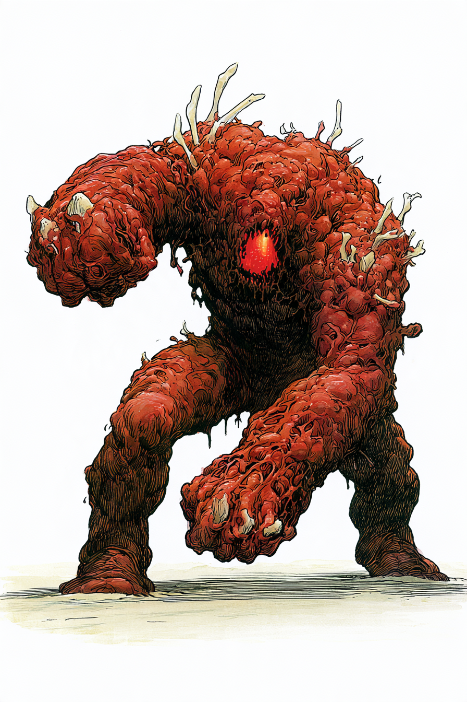
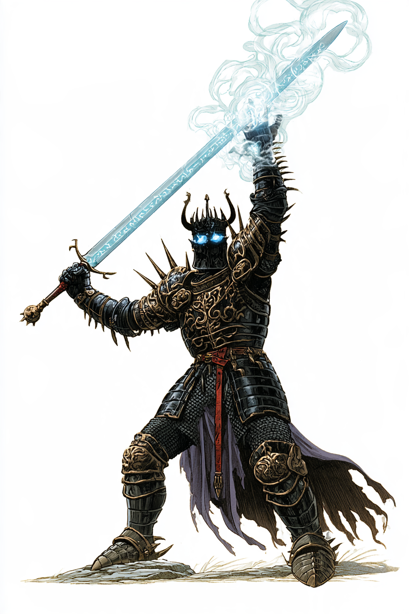
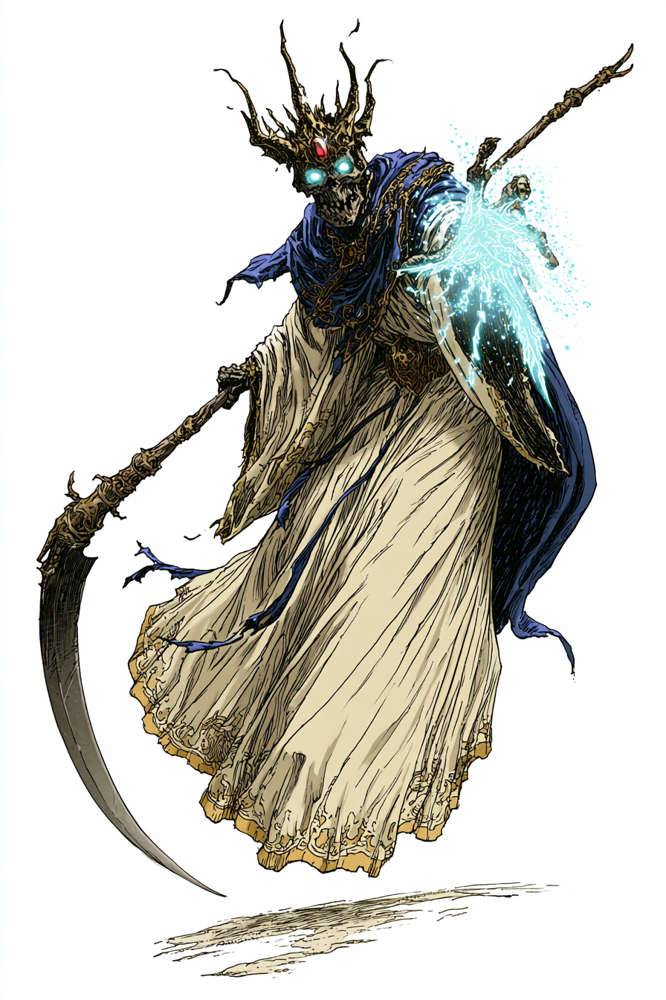

»Ein uralter Koloss aus verfluchtem Erz und Moder. Seit Jahrhunderten bewacht er unerbittlich die Gräber von Dun-Karr. Sein gewaltiger Streitkolben zerschmettert Knochen und Schilde gleichermaßen zu Staub, während er jeden Eindringling ohne Rast in die Finsternis treibt.«
◈ Gruftwächter von Dun-Karr · Altertümlicher Untoter Koloss
◈ Automatisches Verhalten, Raumgefahren & Phasenwechsel
| Wurf | Taktische Aktion | Ausführung & Kampfeffekt |
|---|---|---|
| 1 – 2 | Rundumschlag / Keulenwirbel | Stehen ≥ 2 Helden angrenzend $\rightarrow$ Führt Rundumschwung (2 Schaden auf alle) aus. Andernfalls stürmt er 2 Felder auf den Helden mit der höchsten Rüstung zu. |
| 3 – 4 | Zertrümmernder Hieb | Führt gezielten Schlag gegen sein Primärziel aus: 1d6 + 3 gegen VT (3 Schaden, abzüglich Rüstung). Bei Treffer erleidet das Ziel zusätzlich 1 Erschöpfung. |
| 5 – 6 | Erderschütternder Stampfer | Schlägt die schwere Keule auf das Pflaster: Alle Helden im Raum müssen GES vs SG 6 bestehen oder werden zu Boden geworfen (Liegend). |

»Eine gewaltige, pulsierende Monstrosität aus geronnenem Opferblut und splitterndem Knochenmark. Erschaffen durch verbotene Nekromantie, zermalmt er jede Barrikade und saugt seinen Opfern gierig die Lebenskraft aus den Leibern, um seine wogende Masse zu nähren.«
◈ Fleischgewordene Belagerungswaffe · Szenario 4 Sub-Boss
◈ Automatisches Verhalten, Blutsaugen & Todes-Explosion
| Wurf | Taktische Aktion | Ausführung & Kampfeffekt |
|---|---|---|
| 1 – 2 | Belagerungs-Drang | Zieht auf kürzestem Weg auf die nächste verbleibende Holzbarrikade zu (bricht sie nieder) oder auf den Helden mit den meisten aktuellen LP. |
| 3 – 4 | Blutsaugende Fäuste | Schlägt mit gewaltigen Fleischfäusten zu: 1d6 + 3 gegen VT (2 Schaden & heilt 2 LP). Ziel erhält Zustand Blutend. |
| 5 – 6 | Berstende Adern (Fläche) | Versprüht siedendes Blut im Umkreis von 2 Feldern: Alle Helden müssen ZÄH vs SG 6 bestehen oder erleiden 2 Schaden. |
[H] das Fallgitter öffnen.
»Einst der gefürchtetste Kriegsherr der Gründerzeit, auferstanden zu ewigem, kaltem Hass unter verfluchten Bannern. Seine uralte Runenklinge schneidet durch Fleisch und Geist, während er gnadenlos das Vermächtnis der Verdammten über das Schlachtfeld trägt.«
◈ Kriegsfürst von Mor-Goth · Gepanzerte Untote Elite
◈ Duelltaktik, Totenruf & Runenfluch
| Wurf | Taktische Aktion | Ausführung & Kampfeffekt |
|---|---|---|
| 1 – 2 | Herausforderung des Fürsten | Sucht gezielt den Nahkampf mit dem stärksten Krieger (Berserker / Kriegstänzerin). Nahkampfangriff mit 1d6 + 3 (2 Schaden). |
| 3 – 4 | Runenschlag (Seelengeißel) | Führt mächtigen Schlag aus: 1d6 + 3 gegen VT. Bei Treffer erleidet das Ziel 2 Schaden + 1 Erschöpfung! |
| 5 – 6 | Ruf der Grabeskrypta | Erhebt seine Klinge: Ruft sofort 1 Skelettkrieger an der nächsten Nische herbei! Stehen bereits 2 Skelette im Raum $\rightarrow$ Führt Runenschlag aus. |

»Der uralte Herrscher des Nördlichen Ödlands, Gebieter über den ewigen Frost und die Seelen der Gefallenen. Sein eisiger Blick lässt das Blut der Kühnsten gefrieren, während er aus den Schatten seines gefrorenen Thronsaals die Fäden des Verderbens webt.«
◈ Gebieter von Mor-Malakor · 2 Aktionen pro Runde (Init 7 & Init 3)
◈ 2 Aktionen pro Runde (Aktion 1: Init 7 | Aktion 2: Init 3)
| Aktivierung | Boss-Aktion | Ausführung & Taktischer Ablauf |
|---|---|---|
| AKTION 1 (INIT 7) | Totenbeschwörung / Froststrahl | Sind weniger als 2 Skelette im Thronsaal? $\rightarrow$ Totenbeschwörung (2 Skelette) aus dem Boden! Andernfalls: Froststrahl des Todes (R4, 1d6 + 4 gegen VT, 3 Schaden) auf den weitesten Helden. |
| AKTION 2 (INIT 3) | Seelenernter-Sense (Nahkampf) | Zieht auf den Helden mit den wenigsten verbleibenden LP zu: 1d6 + 3 gegen VT (3 Schaden + 1 Erschöpfung). Bei Niederschlag heilt er sich um 3 LP. |